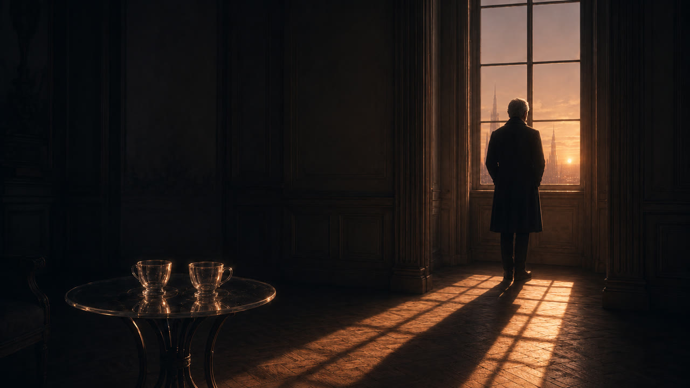
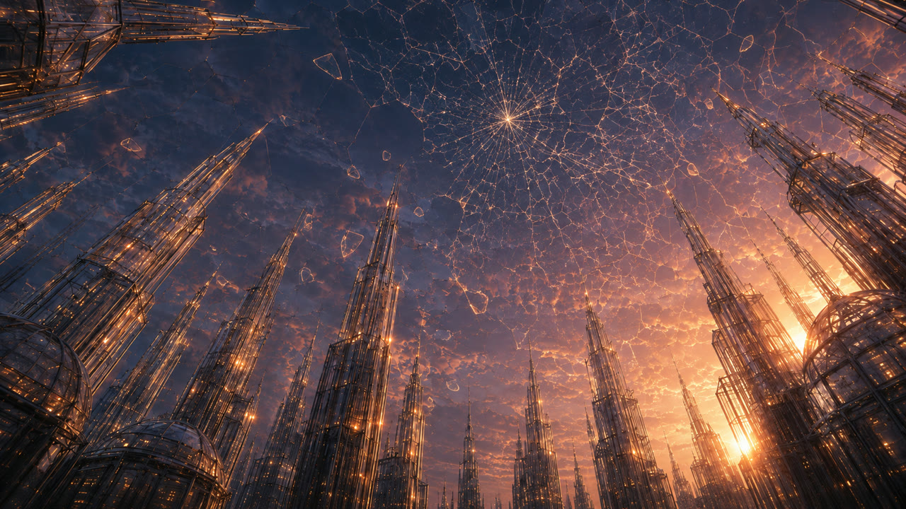
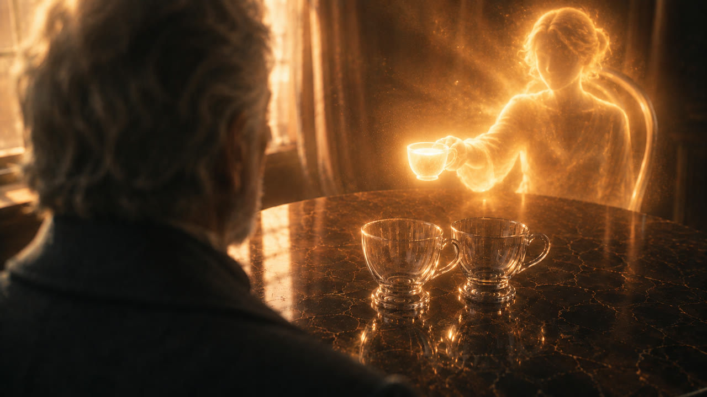
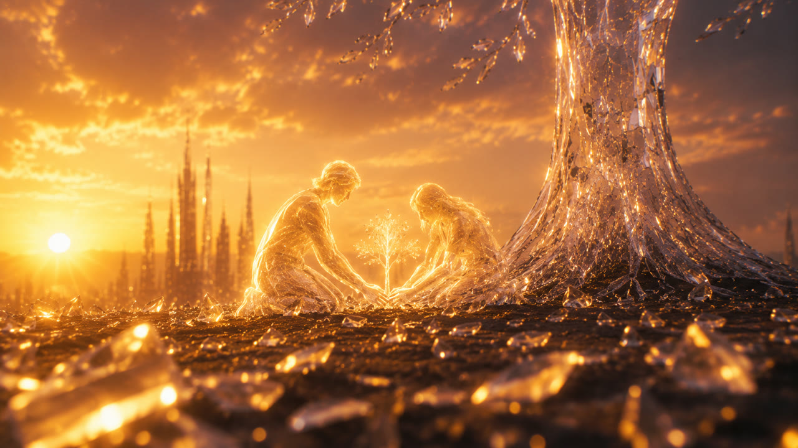

팔린드롬
Palindrome
LOGLINE
아내를 떠나보낸 노인의 가장 어두운 하룻밤. 그의 세계가 유리처럼 소리 없이 부서져 내리고, 마지막 남은 조각마저 손에서 떨어지는 순간 — 기억이 시간을 거꾸로 돌리기 시작한다.
THEME
"애도의 끝은 잊는 것이 아니라,
제대로 기억하는 것이다."
사랑하는 사람을 잃은 사람의 내부에서 세계는 실제로 무너진다 — 거리도, 집도, 마당의 나무도, 식탁 위의 찻잔까지도 전부 그녀와 함께 쌓아 올린 것들이기 때문이다. 종말처럼 보이지만, 종말이 아니다. 애도(哀悼)다. 그리고 이 영화가 믿는 것은 하나다: 그 부서진 세계를 다시 세우는 힘은 망각이 아니라 기억이라는 것.
WHY PALINDROME — 애도는 같은 길을 거꾸로 걷는 일이다
사랑하는 사람을 잃은 사람은 결국 같은 길을 두 번 걷는다. 처음에는 앞으로 — 이별, 장례, 텅 빈 집. 그리고 언젠가는 반드시 뒤로 — 함께 웃던 저녁을 지나, 함께 나무를 심던 봄을 지나, 처음 만난 날까지. 앞으로 걷는 길의 이름은 상실이고, 뒤로 걷는 길의 이름은 추억이다. 두 길은 같은 길이다. 방향만 다르다. 그래서 이 영화에서 역재생은 기법이 아니라 애도의 초상이다.
그리고 이 영화에는 대사도, 나레이션도, 효과음조차 없다. 가장 깊은 슬픔은 언어 이전의 사건이기 때문이다. 유일하게 끝까지 남아 있는 소리는 음악 — 언어가 아닌 것 — 뿐이고, 그 음악은 세계가 부서지고 멈추고 뒤집히는 동안에도 한 번도 끊기지 않는다.
후반부는 전반부의 되감기가 아니다. 되감기에는 없는 네 가지가 있다:
- 색이 따뜻해진다 — 같은 화면이 금빛으로 물든다. 상실의 눈으로 본 과거와 감사의 눈으로 본 과거는 같은 과거가 아니다. 기억은 사실이 아니라 온도를 저장한다.
- 킨츠기 금선은 후반에만 생긴다 — 균열이 메워질 때는 금으로 메워진다. 원상복구가 아니라 성장이라는 물증.
- 기억 두 장면이 새로 열린다 — '그녀의 자리'와 '함께 심던 날'은 전반부에 없다. 시간을 되짚는 사람에게만 열리는 문이 있다.
- 세계가 좌우로 뒤집힌다 — 태양은 반대편으로, 왼손은 오른손으로. 기억 속에서 다시 걷는 길은 거울에 비친 길이다.
SCENES — 빛 한 점에서 빛 한 점으로
빛 한 점
완전한 어둠, 그 중앙에 아주 작은 황금빛 한 점. 도시도, 집도, 그녀도, 그도 아직 없다. 관객은 이 2.5초를 오프닝 장식으로 흘려보내지만 — 영화의 끝에서 정확히 같은 화면으로 돌아와서야 알게 된다. 두 사람의 사랑이 시작되기도 전에, 사랑 그 자체가 먼저 있었다.

황혼의 방
창가에 노인이 등을 보이고 서 있다. 식탁 위에는 유리 찻잔이 두 개. 잔은 둘인데, 사람은 하나다. 그녀가 떠난 뒤에도 그는 여전히 잔을 두 개 꺼낸다 — 수십 년의 사랑이 손에 남긴 습관은 죽음보다 오래간다.

첫 균열
벌집 모양으로 짜인 유리 하늘. 그 한 점에서 거미줄 균열이 소리 없이 번진다. 상실은 사이렌을 울리며 오지 않는다. 슬픔의 첫 형태는 통곡이 아니라 이 고요한 균열이다. 그리고 이 이음매 선들은 — 나중에 킨츠기 금선이 놓일 바로 그 자리다.

붕괴의 절정
집이 해체되고 파편 구름이 하늘을 채운다 — 그런데 파편은 아래로 떨어지지 않고 꽃잎이 열리듯 위로 떠오른다. 아름다웠기 때문에, 잃는 것이 이토록 아픈 것이다. 세상은 그 어느 때보다 환한데, 그 안의 사람만 점처럼 작다.
가장 어두운 밤
마지막 남은 파편 한 조각마저 손을 떠나 떨어진다 — 기억마저 놓아버리는 순간. 화면이 영화 전체에서 가장 어두워지고, 관객은 파편이 바닥에서 부서지는 것을 볼 준비를 한다. 그러나 파편은 바닥에 닿지 않았다. 공중에 멈춰 있다. 슬픔의 밑바닥에는 바닥이 있고, 어둠은 끝이 아니라 방향이 바뀌는 자리였다. 여기서부터 시간이 거꾸로 흐르고, 세계는 거울처럼 좌우가 뒤집힌다.

그녀의 자리
온전해진 두 찻잔 너머, 빈 의자에 따뜻한 금빛 온기가 어린다. 얼굴 없는 실루엣, 그리고 잔 하나를 건네는 손. 깨진 잔 = 그녀의 부재였던 것이, 여기서 "그녀가 그 잔을 처음 건네주던 저녁"으로 뒤집힌다. 상실의 증거들이 하나씩, 사랑받았음의 증거로 돌아서는 것 — 시간을 끝까지 되짚은 사람에게만 열리는 문이다. 그녀에게 얼굴이 없는 이유: 기억 속의 사람은 얼굴로 오지 않는다. 온기로 온다.

함께 심던 날
유리 나무의 밑동, 두 개의 금빛 실루엣이 나란히 무릎을 꿇고 손과 손이 흙 위에서 만난다. 관객은 지금껏 이 나무를 "부서졌다 복원된 것"으로 보고 있었다 — 그런데 기억이 조금 더 거슬러 오르자 드러난다. 이 나무는 복원된 게 아니라 두 사람이 함께 심은 것이다. 영화는 그에게 그녀를 돌려주지 않는다. 대신 함께였다는 사실을 돌려준다 — 그것은 이미 일어난 일이어서, 죽음도 빼앗을 수 없다.

킨츠기 — 흉터가 금이 되는 시간
세계가 다시 서고, 하늘의 균열이 하나씩 금빛으로 채워진다. 킨츠기(金継ぎ) — 깨진 도자기를 금으로 이어 붙여, 흉터를 감추는 대신 드러내어 깨지기 전보다 아름답게 만드는 수리 철학. 금선이 그어질 수 있는 자리는 금이 갔던 자리뿐이다. 그는 아내를 잃기 전의 자신으로 돌아가지 않는다. 더 깊어진 사람이 된다. 이 영화가 "회복"이 아니라 "성장"을 말하는 지점이다.

정면, 그리고 미소
오프닝과 정확히 같은 창. 그때 그는 등을 보이고 있었고 세계가 무너지기 시작했다. 지금 그는 정면으로 서 있고 세계가 빛으로 만개한다. 바뀐 것은 그가 서 있는 방향뿐이다. 94초 동안 역광 실루엣이던 그의 얼굴이 처음으로 열리고 — 미소. 이것은 망각의 미소가 아니다. 가장 잘 기억하는 사람의 미소다.
빛 한 점, 다시
카메라가 물러나면 하늘 전체가 금선으로 이어진 거대한 돔이다 — 가까이서는 상처였던 것들이 멀리서는 무늬다. 세계가 계속 축소되어 어둠 한가운데 작은 황금빛 한 점만 남는다. 영화가 시작한 그 화면이다. 기억을 끝까지, 끝까지 거슬러 올라가면 마지막에 남는 것은 상실이 아니다. 처음의 사랑이다. 모든 것이 거기서 왔고, 모든 것이 거기로 돌아간다.
SYMBOLS — 상징 사전
- 두 개의 찻잔이 영화의 심장. 하나가 깨지는 것이 전반부의 사건이고, 그 잔이 그녀가 건네준 것이었음이 후반부의 계시다. 기억이 잠들어 있는 사물.
- 손전반에서는 붙잡으려다 놓치는 기관, 후반에서는 받는 기관. 힌지에서 왼손이 오른손이 된다 — 애도의 전환이 신체에 새겨진 자리.
- 마지막 파편상실 뒤에 남는 기억 한 조각. 너무 작아서 이것마저 버리고 싶어지는 크기 — 그러나 회복은 정확히 이 한 조각에서 시작된다.
- 킨츠기 금선흉터를 감추지 않고 금으로 그려 부서지기 전보다 아름답게 만드는 것. 고통이 지나간 자리만이 가장 빛나는 자리가 될 수 있다는, 성장과 축복의 논리.
- 유리 세계기억과 같은 물성 — 빛을 담고, 깨지기 쉽고, 금으로 이을 수 있다. 한 사람이 평생 사랑하며 지은 기억의 건축.
- 유리 나무두 사람이 함께 심은 세월. 기억을 거슬러 오르면 복원된 것이 아니라 함께 시작한 것 — 죽음이 빼앗을 수 없는 과거완료의 사랑.
- 태양시간의 나침반이자 숨은 주인공. 전반에 지고 후반에 뜬다 — "저녁에는 울음이, 아침에는 기쁨이"의 광학 번역.
- 세 개의 어둠시작의 어둠, 밑바닥의 어둠, 끝의 어둠 — 물리적으로 같지만, 지나온 사람에게는 다르다. 마지막 어둠은 곧 빛이 놓일 어둠이다.
- 얼굴 없는 온기그녀에게 얼굴이 없으면, 관객 각자가 잃은 그 사람이 된다. 기억 속의 사람은 얼굴이 아니라 온기로 온다.
- 창오프닝의 뒷모습과 클라이맥스의 정면이 선 같은 자리. 인생은 바뀌지 않았고, 서 있는 방향이 바뀌었다는 것의 물리적 증명.
DIRECTOR'S STATEMENT — 감독의 말
이 영화는 어떤 밤을 위해 만들었다. 조문객이 다 돌아가고, 집이 갑자기 너무 커진 밤. 습관처럼 찻잔을 두 개 꺼냈다가 손이 멈추는 밤. 기억이 전부 흉기가 되는 것 같아서, 차라리 다 잊어버리고 싶어지는 밤 — 사랑하는 사람을 떠나보낸 이들이 반드시 한 번은 통과하는, 그 밤.
그 밤에 세상이 건네는 위로들은 대개 지우개다. "시간이 약이다"는 무뎌지기를 기다리라는 말이고, "이제 그만 잊으라"는 말은 사랑했던 시간까지 함께 버리라는 말처럼 들린다. 그러나 나는 반대의 것을 믿는다. 사람을 다시 일으키는 것은 망각이 아니라 기억이다. 슬픔이 그토록 아픈 이유는 사랑이 진짜였기 때문이고, 그렇다면 그 슬픔을 통과하는 길도 사랑이 지나온 길 위에 있을 수밖에 없다.
그래서 이 영화는 필름을 거꾸로 감는다. 깨진 잔을 거슬러 오르면 그 잔을 처음 건네주던 저녁이 있고, 쓰러진 나무를 거슬러 오르면 흙 위에서 만나던 두 손이 있다. 기억을 끝까지 되짚어 걸은 사람에게 상실의 증거들은 하나씩 돌아선다 — 함께였다는 증거로. 그것은 이미 일어난 일이라서, 죽음도 손댈 수 없다.
그리고 킨츠기. 부서진 그릇을 금으로 이어 붙이면, 그릇은 깨지기 전보다 아름다워진다 — 그리고 금선이 그어질 수 있는 자리는, 금이 갔던 자리뿐이다. 나는 고통이 좋은 것이라고 말하려는 게 아니다. 고통은 아프다. 다만 그 고통을 끝까지 통과한 사람에게는, 부서졌던 바로 그 자리가 그 사람에게서 가장 깊고 가장 빛나는 자리가 된다는 것 — 그것을 나는 성장이라 부르고, 감히 축복이라 부른다. 다 보고 나면 하늘 전체가 금으로 이어져 있는데, 그 금은 전부 상처에서 왔다.
이 영화의 노인은 인생의 단 한 장면도 되돌려 받지 못한다. 잔은 깨졌었고, 그녀는 떠났고, 세계는 무너졌었다. 그런데 그는 마지막에 웃는다. 잊어서가 아니다. 마침내 제대로 기억해서다. 그 미소가, 지금 그 밤을 지나고 있는 누군가에게 건너가기를 바란다.
잃은 것은 없었다.
모든 것은 처음의 선물로 돌아가고 있었다.
사랑은 사라지지 않는다.
기억이라는 빛으로 남아, 우리를 다시 살게 한다.
CREDITS
- WRITTEN · DIRECTED · EDITEDAHN JAEKWON
- GENERATIVE AI · COMPOSITINGAHN JAEKWON
- PIPELINEGPT Image · Seedance 2.0 · After Effects · Topaz · Suno